未解決の課題
OPEN 12件（FT-H8／FT-O13／FT-O12／FT-O10／FT-O9／FT-O8／FT-O6／FT-O4／FT-O3／FT-O2／FT-O1／FT-H7）。
HIGH
OPEN
FishTrack
FT-H8 — 未ログイン LP では登録前に何ができてどう便利かが分からない
画面: 未ログイン ランディング（PC）。旧 FT-H9／FT-H10 を 2026-08-13 に本 ID へ統合
対象箇所
- URL／画面:
http://localhost:5001/（未ログイン時。ログイン済みは
/dashboard へ飛ぶ）
- 位置: ヒーロー
.ft-lp-hero（キャッチ＋リード1段落＋登録／ログイン、
全幅写真＋.ft-lp-hero__overlay）、
ストーリー3段（各見出し＋本文1段落＋生成写真）、
締め .ft-lp-cta-band。
機能一覧・向き・始め方の節が無い
- 対象外: ログイン後画面そのもの。MyPokedex LP。
管理者 UI（未ログイン公開面のため対象外）
事象
会員登録してログインするまで、FishTrack で何ができてどう便利かが分からない。
本文はキーメッセージ1段落と雰囲気寄りのストーリー3段だけ。
画像は生成の釣り風景で、登録後のホーム／水位／釣果が1枚も出ない。
レイアウトも汎用生成 LP の定番（全幅写真＋暗転白抜き、左右交互3段、グラデ締め CTA）。
 pc-lp-current.png — ▲ ヒーローはキャッチと CTA。機能の説明も実画面も無い
pc-lp-current.png — ▲ ヒーローはキャッチと CTA。機能の説明も実画面も無い
 pc-lp-stories.png — ▲ ストーリーも1段落＋風景写真。できることの一覧が無い
pc-lp-stories.png — ▲ ストーリーも1段落＋風景写真。できることの一覧が無い
何が問題か
- 初回ユーザー: 登録のコストを払う前に、価値も中身の画面も確認できない
- 導線・IA: 公開面は LP だけなので、ここが機能の唯一の説明場所
- 主CTA: 登録ボタンは目立つが、押す理由（何ができるか）が弱い
- 視認性: スキャンできる機能の塊が無く、証拠となる UI も隣に無い
- 管理者: 未ログイン公開面のため対象外
改善策
1件の LP 課題。サンプル
ft-h8.html は完成版相当の単一 LP（同一ページに変更前は置かない）。
変更前は上の現状スクショ。変更後は下の完成版サンプル。
LP は製品説明に加え宣伝も担う。分量を短く抑えることは目的ではない。
現行ドラフトは1本（案Eの骨格＋案Fの実写）。案A〜Fの比較提示は終了。
先頭ヒーローはブラウザの幅・高さを 100% 使うフルブリード
（製品 main の padding は打ち消す。紫／青グラデは使わない）。
コピーは左寄せ・縦中央の白文字。
釣行前は湖面写真と水位画面を横並び（画面は中身が見える位置にクロップ）。
現場／帰宅後は現場写真＋登録画面、積み込み写真＋釣行一覧。
機能は2列。各カードに写真または実画面を置き、空カードを伸ばさない。
締めは白地＋主ボタン。
ページの長さは情報と画像の大きさで決める（余白で伸ばさない）。
FishTrack のボタン・M PLUS 2・アクセント #2563EB で組む。
ヒーロー上の公開ヘッダーは白透過ロゴとページ内ナビ
（釣行前／記録／機能／使い始め）と右端の「無料で新規登録」。
（fishtrack-logo-white.png。現行マークのインクを白にしたもの）。
スクロール後のソリッドは製品の濃色ロゴと本文色ナビ。
スタイルは ft-h8.css、ヘッダーの透過／ソリッド切替は ft-h8.js。
現行ドラフト ブラッシュアップ中
Reading: バス釣り個人向けの製品 LP。既存トークンを保ち、実写で空気を出し、画面で中身を証明する。
見出し・本文・実画面を大きく置き、空の余白で伸ばさない。
ヒーロー以外は写真が空気、画面が証拠。等幅3カード、紫グラデ暗転、左右交互3段は使わない。
CTA ラベルはページ全体で「無料で新規登録」「ログイン」。
ヘッダーから紹介節へスクロールできる。
以降の指摘はこの HTML を直して進める。
サンプル:
fishtrack/samples/ft-h8.html
（完成版相当。CSS/JS 分離。対比は上の現状スクショ）
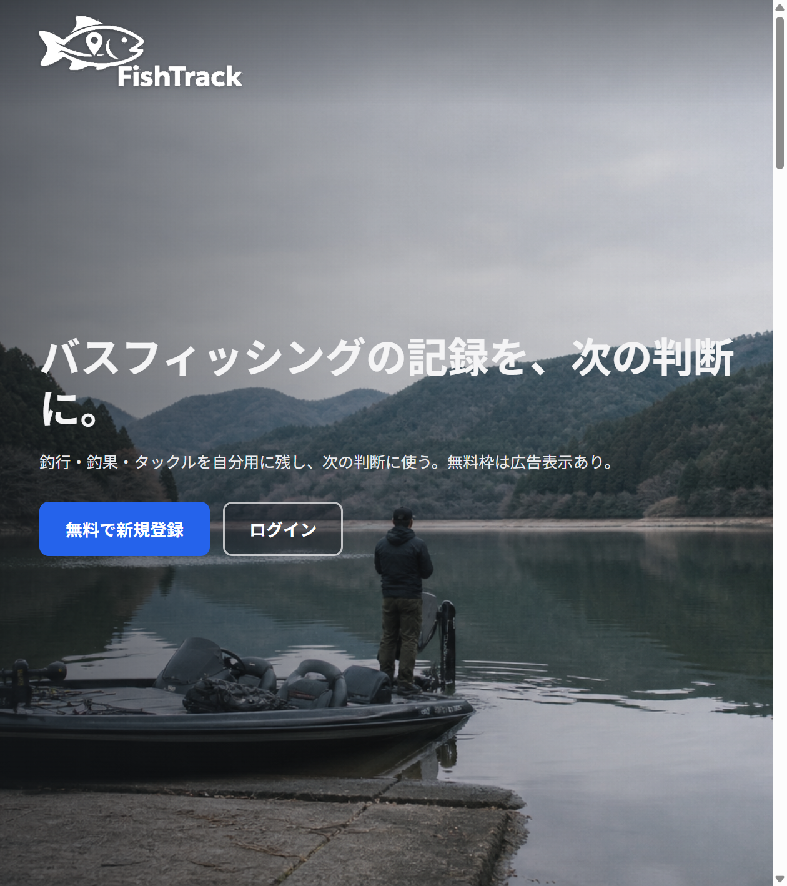
sample-ft-h8.png — ▲ 完成版相当。写真がブラウザ幅・高さいっぱい。コピーは左・縦中央。ヘッダーは白透過ロゴとページ内ナビ
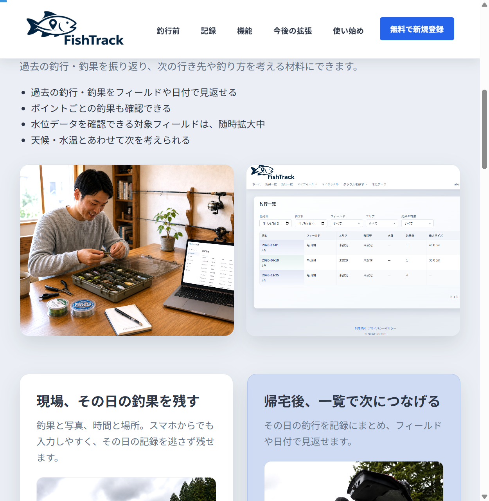
sample-ft-h8-story.png — ▲ 完成版相当。左が湖面、右が水位画面の中身
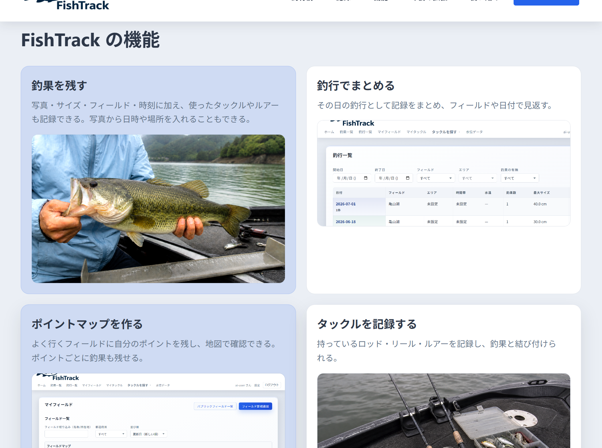
sample-ft-h8-features.png — ▲ 完成版相当。2列。空カードを伸ばさず、写真または画面を置く
検討過程の案A〜F（a／
b／
c／
d／
e／
f）と
旧実画面サンプル（ft-h9-a.html／
ft-h9-b.html）と
旧説明サンプル
（ft-h10-a.html／
ft-h10-b.html）は残置。
判断の正は ft-h8.html。
書体 — 採用済み
M PLUS 2 をアプリ全体（--font-sans）で自己ホスト済み。
Google Fonts CDN は CSP で不可。Inter / Poppins / Montserrat は使わない。
検討過程のサンプルは
ft-h8-type-mplus2.html。
実装: 書体済み。製品 LP は現行ドラフト（ft-h8.html）のブラッシュアップ中。未着手。
MED
OPEN
FishTrack
FT-O13 — フィールド依頼レビューで承認／見送り行の操作が「—」
画面: 管理者 フィールド依頼レビュー（PC）
対象箇所
- URL／画面:
/fishtrack/admin/field-request/list
（admin/field_request_list.html）
- 位置: 表の「操作」列。審査待ちだけ
details.ft-admin-fr（承認・見送り）。
承認／見送り済みはセルが「—」のみ
- 対象外: 一般ユーザーの
/fishtrack/field-request/list（FT-O10）、
行内の承認フォームそのものの複雑さ
事象
状況フィルタを「すべて」にすると、承認・見送り済みの行は操作列が
「—」だけで、依頼内容（座標・名称・依頼者メモ）を
一覧から開き直せない。審査待ちだけ行内 details がある。
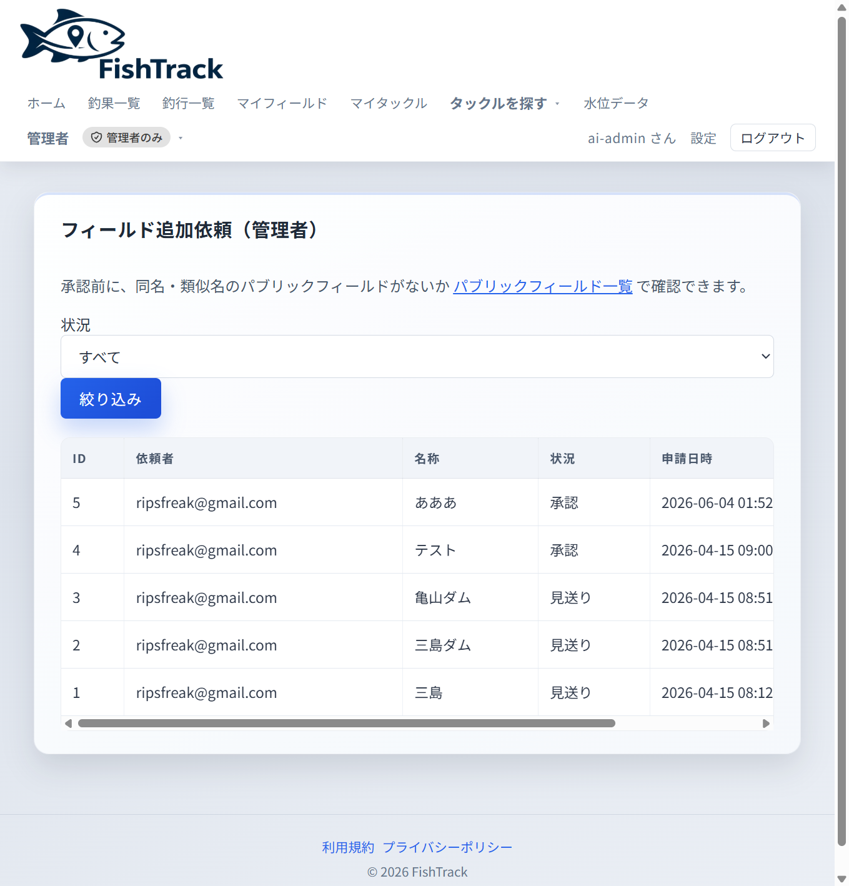
pc-admin-field-request-empty.png — ▲ 操作列が「—」。詳細へのリンクがない
何が問題か
- 監査: 過去依頼の根拠を後から確認できない（誤承認の見直しが困難）
- 一貫性: マイフィールド一覧は行から詳細へ行けるのに、管理者レビューだけ行き止まり
- 到達: 審査待ち以外は URL 直打ち以外に詳細がない
改善策
推奨: 案A。案A／案Bの違い:
操作列に常時「詳細」リンクを置くか（A）vs
行クリックで詳細へ行き操作列を廃止するか（B）。
どちらも審査待ちの承認 UI は詳細画面へ集約する想定。
案A — 全行に詳細リンク 推奨
状況に関わらず操作列に「詳細」を置く。
メリット: アフォーダンスが明示的。デメリット: 列は残る。
サンプル:
fishtrack/samples/ft-o13-a.html
（上＝変更前／下＝変更後）
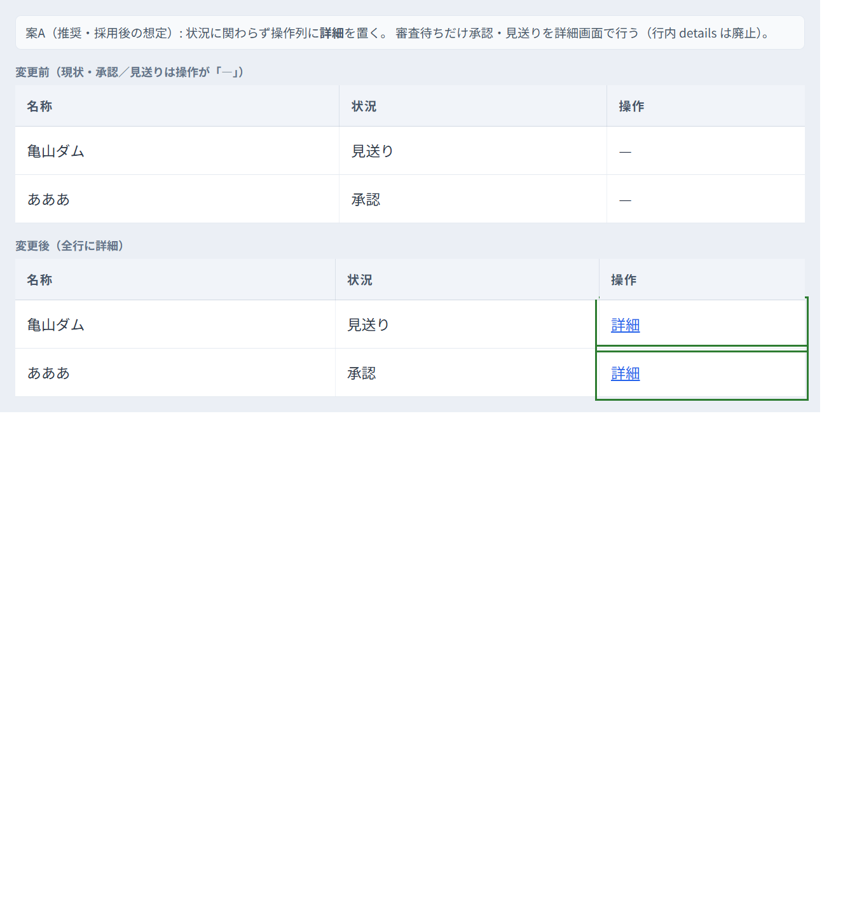
sample-ft-o13-a.png — ▲ 下の変更後は全行に「詳細」
案B — 行クリックで詳細
マイフィールド一覧と同じく行全体をクリック。操作列の「—」は廃止。
メリット: 列が減り密度が上がる。
デメリット: クリック可能だと分かりにくい（ヒント文が必要）。
サンプル:
fishtrack/samples/ft-o13-b.html
（上＝変更前／下＝変更後）
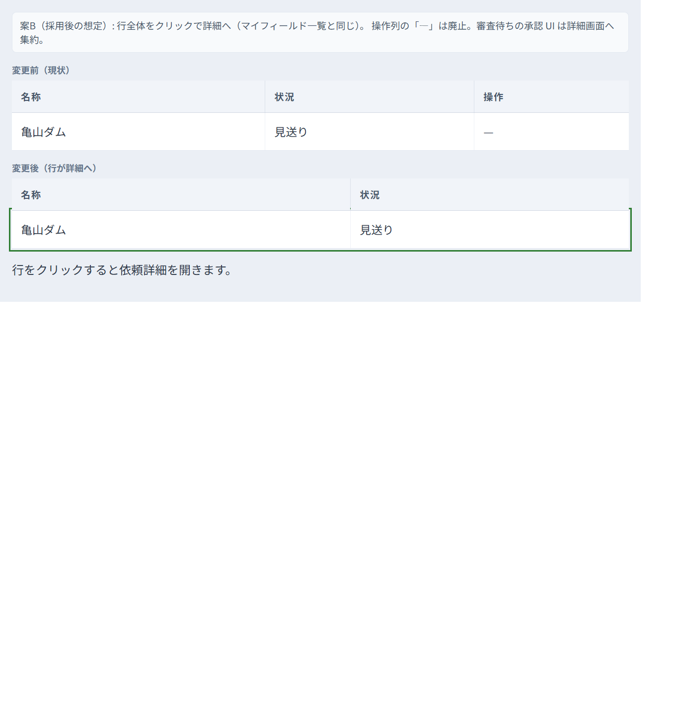
sample-ft-o13-b.png — ▲ 下の変更後は行が詳細へ（操作列なし）
実装: 未着手（診断のみ）。
MED
OPEN
FishTrack
FT-O12 — ユーザー管理で空の統計カードが一覧を押し下げ、検索がない
画面: 管理者 ユーザー管理（PC）
対象箇所
- URL／画面:
/fishtrack/admin/users
（admin/user_list.html）
- 位置: 先頭の
.admin-stats-section（空でも
.stat-card＋canvas を表示）の下に
.admin-users-section の表。検索 UI なし
- 対象外: 統計グラフ自体の有無（データがあるときの可視化は有用）
事象
ローカル等で集計が空でも「新規ユーザー数（日次）」「アクティブユーザー数（週次）」の
大きな空カードが先に出る。ユーザー一覧はスクロール先。
メール／ID の検索がなく、列が多い表は横スクロールになる。
 pc-admin-users-no-search.png — ▲ 空チャートが一覧より先。検索欄なし
pc-admin-users-no-search.png — ▲ 空チャートが一覧より先。検索欄なし
何が問題か
- 管理: 日常作業（特定ユーザーを探す・削除）が一覧到達まで遅れる
- 空状態: 「データがありません」と空カードが二重で縦を食う
- スケール: ユーザー増後に検索がないと表走査しかない
改善策
推奨: 案A。案A／案Bの違い:
一覧＋検索を先頭に上げ空統計を折りたたむか（A）vs
並びは維持し空カードだけ出さないか（B）。
案A — 一覧と検索を先に 推奨
メール／ID 検索とユーザー表をページ先頭。空の統計は折りたたみ。
メリット: 管理の主作業がファーストビュー。
デメリット: 統計を毎日見る運用なら1クリック増。
サンプル:
fishtrack/samples/ft-o12-a.html
（上＝変更前／下＝変更後）
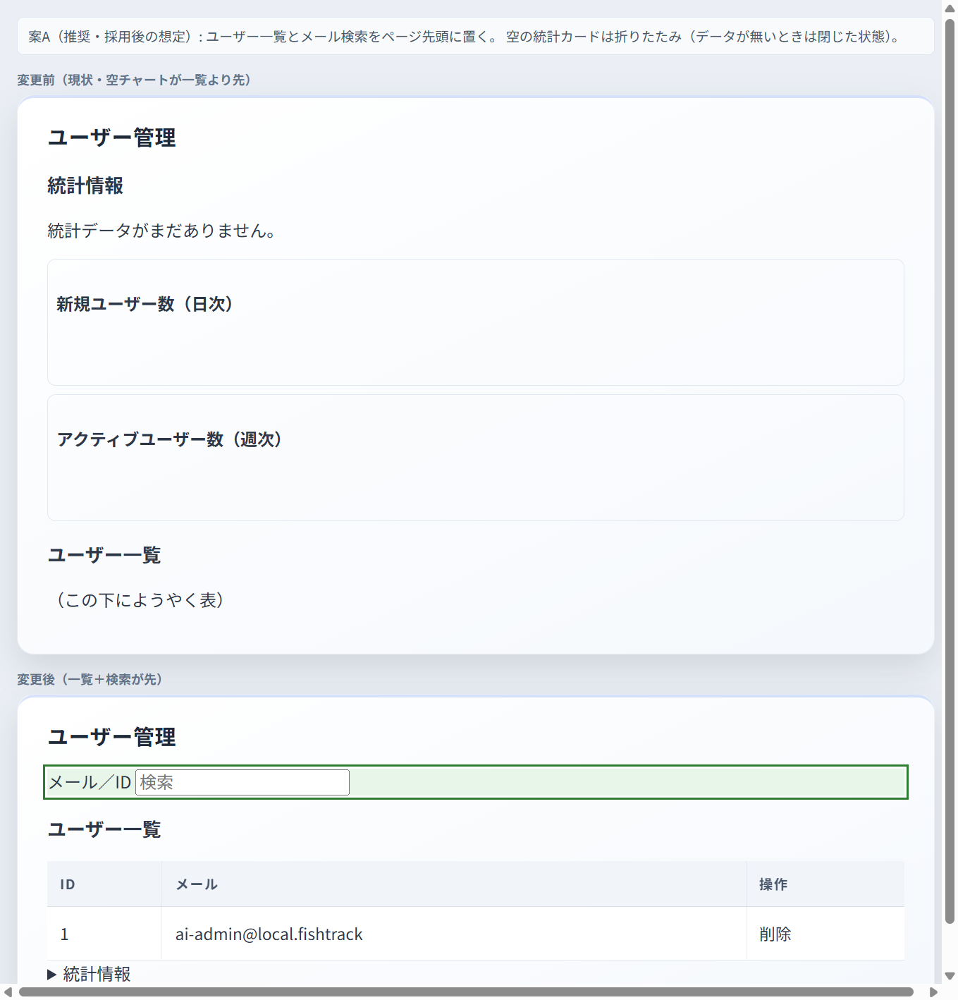
sample-ft-o12-a.png — ▲ 下の変更後は検索＋一覧が先、統計は折りたたみ
案B — 空カードを出さないだけ
並びは現状のまま、データが無いときは1行説明のみ。検索は付けない。
メリット: 変更最小。デメリット: 検索欠如は残る。
サンプル:
fishtrack/samples/ft-o12-b.html
（上＝変更前／下＝変更後）
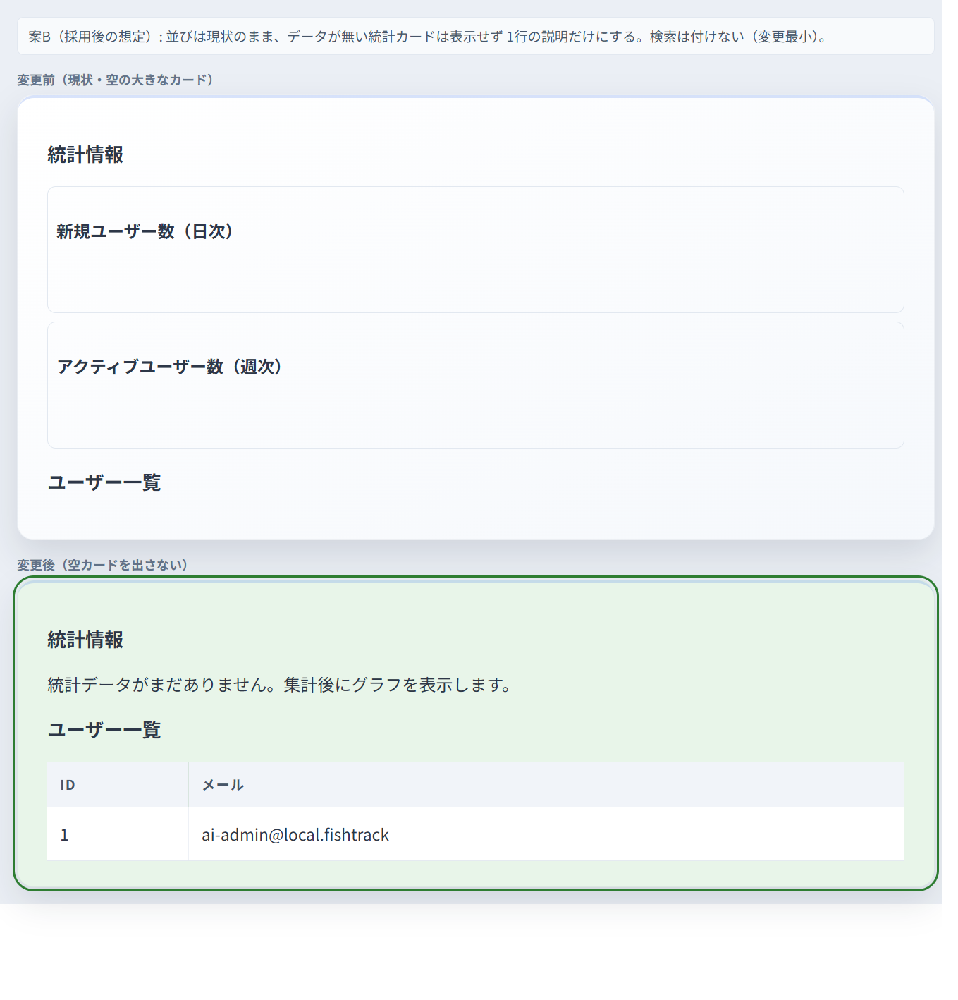
sample-ft-o12-b.png — ▲ 下の変更後は空カードなし（検索は未追加）
実装: 未着手（診断のみ）。
MED
OPEN
FishTrack
FT-O10 — フィールド追加依頼がナビにもマイフィールドにも無い
画面: マイフィールド／フィールド追加依頼一覧（一般ユーザー）
対象箇所
- URL／画面:
/fishtrack/field（マイフィールド、
field_area/list.html の
.card-header .filter-actions）と
/fishtrack/field-request/list（直打ちで到達）
- 位置: ヘッダーは「フィールド新規追加」「パブリックフィールド一覧」のみ。
グローバルナビにも依頼リンクなし
- 対象外: パブリック一覧をヘッダーへ出す話（FT-O6）、
管理者の依頼レビュー（FT-O13）
事象
パブリック化の依頼画面は存在するが、マイフィールドからもナビからも
リンクが無い。初回ユーザーは URL を知らないと使えない。
依頼一覧を開くと「自分の依頼」と分かるが、入口が孤立している。
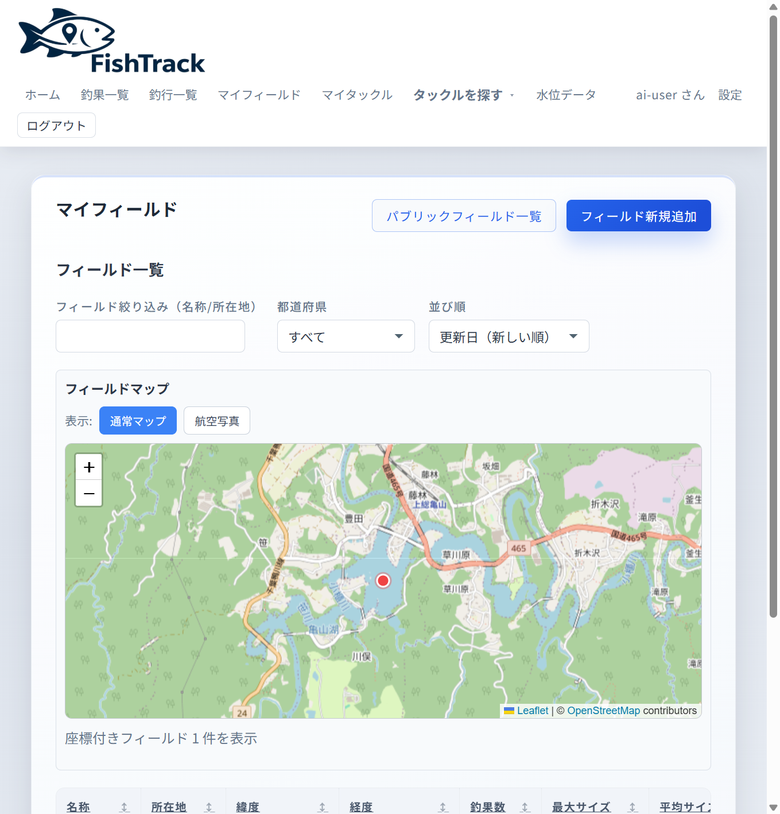
pc-my-fields-header-no-request.png — ▲ 新規追加とパブリック一覧のみ
 pc-field-request-orphan.png — ▲ 画面自体はあるが導線が無い
pc-field-request-orphan.png — ▲ 画面自体はあるが導線が無い
何が問題か
- 発見性: 機能があっても入口が無いと使われない
- 初回: 「自分のフィールドを公開したい」ときに新規追加と依頼の違いが分からない
- 運用: 管理者レビュー（O13）の前提である依頼が一般側から届きにくい
改善策
推奨: 案A。案A／案Bの違い:
ヘッダーに依頼ボタンを足すか（A）vs
見出し下の説明リンクだけにするか（B）。
案A — マイフィールドに依頼ボタン 推奨
既存の「フィールド新規追加」「パブリック一覧」の横に
「フィールド追加依頼」を置く。
メリット: 同系統の操作が並ぶ。デメリット: ヘッダーボタンが1つ増える。
サンプル:
fishtrack/samples/ft-o10-a.html
（上＝変更前／下＝変更後）
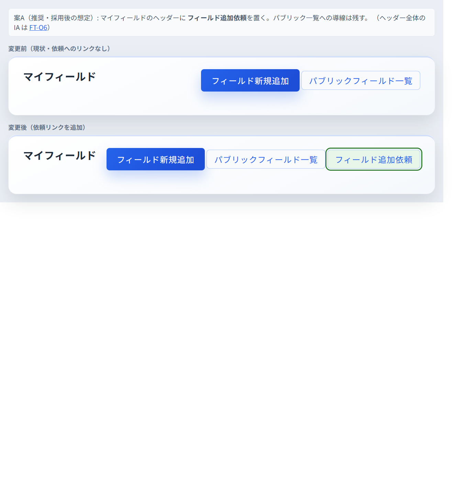
sample-ft-o10-a.png — ▲ 下の変更後に「フィールド追加依頼」
案B — 説明リンクで誘導
ボタンは増やさず、見出し下に短い説明＋リンク。
メリット: ヘッダー密度を維持。デメリット: スキャンで落ちやすい。
サンプル:
fishtrack/samples/ft-o10-b.html
（上＝変更前／下＝変更後）
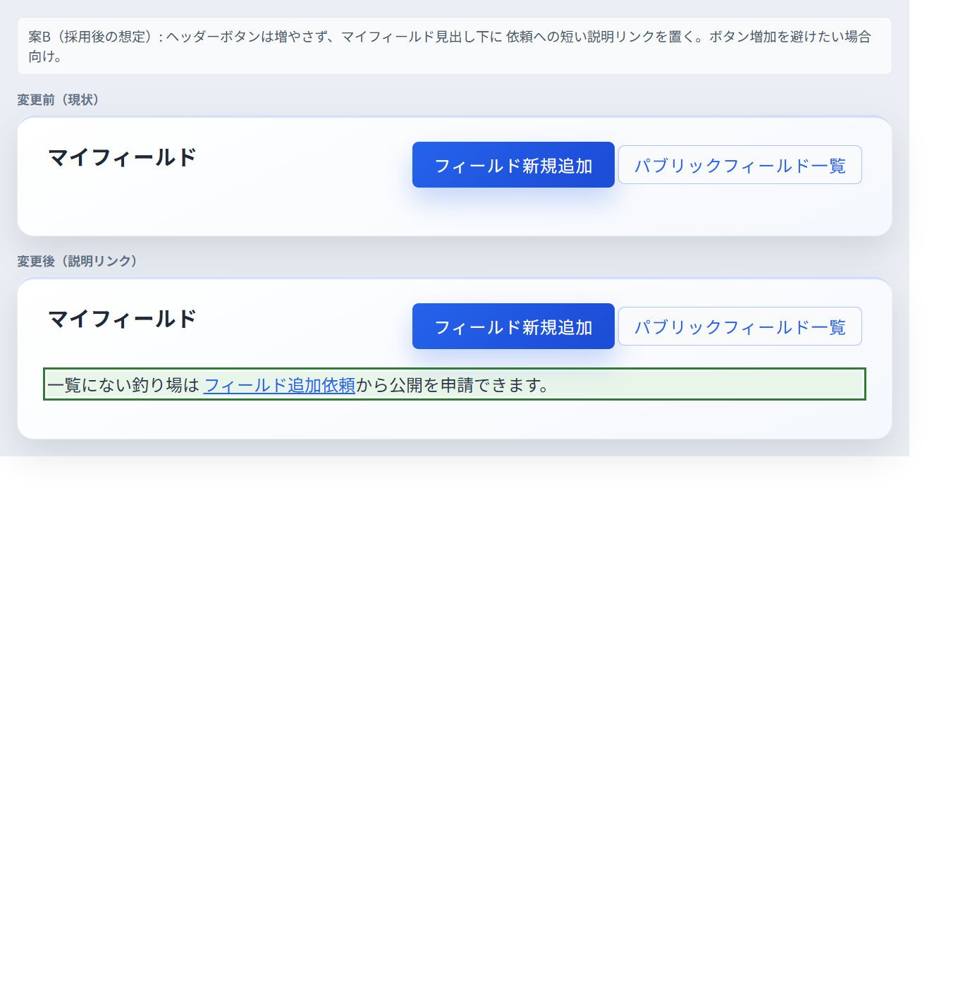
sample-ft-o10-b.png — ▲ 下の変更後は説明文リンク
実装: 未着手（診断のみ）。関連: FT-O6。
MED
OPEN
FishTrack
FT-O9 — 釣果登録が長く、必須項目が分からない
画面: 釣果の追加／編集（PC）
対象箇所
- URL／画面:
/fishtrack/catch/new
（catch/form.html、
#catch-form／.catch-form-section）
- 位置: 「日時・場所」「魚種・計測・環境」「タックル」が
同列のセクションとして縦に続く。ラベルに必須印なし
- 対象外: 写真ステップ（任意のまま先頭でよい）、
ホームからの到達（FT-O8）
事象
保存に必要な日付・フィールドと、後からでもよいタックル・位置・メモが
同じ視覚的重みで並ぶ。必須の印がなく、初回は
「全部埋めないと送れない」ように見える。フォームが長い。
 pc-catch-new-form-long.png — ▲ 必須印なし。タックル等が同列
pc-catch-new-form-long.png — ▲ 必須印なし。タックル等が同列
何が問題か
- 初回: 最短で記録する経路が見えない（離脱・未保存）
- 誤操作: 任意項目を必須と誤解して入力コストが上がる
- 視認: 長い1画面で「今どこまで必須か」が分からない
改善策
推奨: 案A。案A／案Bの違い:
必須印に加え任意を折りたたむか（A）vs
必須印だけ付けて長さは維持するか（B）。
案A — 必須印＋任意は折りたたみ 推奨
日付・フィールド等に *。タックル・位置・メモは
details（任意）。写真は任意のまま先頭。
メリット: 初回の最短経路が短い。
デメリット: タックルを毎回書く人は1クリック増。
サンプル:
fishtrack/samples/ft-o9-a.html
（上＝変更前／下＝変更後）
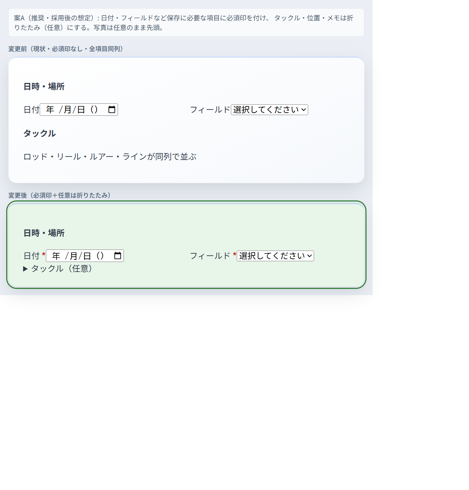
sample-ft-o9-a.png — ▲ 下の変更後は必須印とタックル折りたたみ
案B — 必須印だけ
フォームの長さは維持し、保存に必要な項目にだけ印を付ける。
メリット: 学習コスト最小。デメリット: 縦の長さは残る。
サンプル:
fishtrack/samples/ft-o9-b.html
（上＝変更前／下＝変更後）
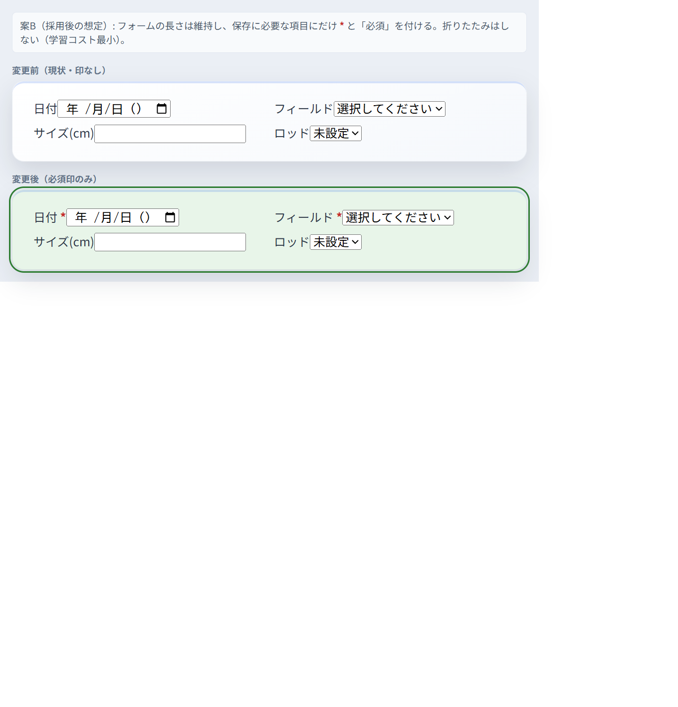
sample-ft-o9-b.png — ▲ 下の変更後は必須印のみ（折りたたみなし）
実装: 未着手（診断のみ）。
MED
OPEN
FishTrack
FT-O8 — ホームにデータがあるとき記録CTAが無く「一覧へ」だけ
画面: ホーム（ログイン後）
対象箇所
- URL／画面: ホーム
（
home.html、
.home-dashboard__section-header）
- 位置: 「最近の釣果」「最近の釣行」等の見出し右。
データがあるときは「釣果一覧へ」「釣行一覧へ」のみ。
空のときだけ本文に「釣果を追加」リンク
- 対象外: 釣果一覧画面の「釣果を追加」（そこにはある）、
BEST5 の順位表示（FT-H7）
事象
一度記録するとホームの主CTAが閲覧（一覧へ）だけになる。
日常の「もう1件記録する」はヘッダーや一覧を経由する必要がある。
空状態では追加リンクが出るため、データ有無で行動の入口が逆転している。
 pc-dashboard-no-add-cta.png — ▲ 節ヘッダーは「一覧へ」のみ
pc-dashboard-no-add-cta.png — ▲ 節ヘッダーは「一覧へ」のみ
何が問題か
- 主目的: 釣行ログのホームなのに、継続記録より閲覧が先に見える
- 初回以降: 使い始めてから記録が遠くなる（オンボードと逆）
- 一貫性: 一覧画面には追加ボタンがあるのにホームには無い
改善策
推奨: 案A。案A／案Bの違い:
各節ヘッダーに記録CTAを足すか（A）vs
ホーム先頭に記録バーを1本置くか（B）。
案A — 節ヘッダーに記録CTA 推奨
「最近の釣果」に「釣果を追加」、「最近の釣行」に「釣行を追加」。
「一覧へ」は副次のまま。
メリット: 見ている節の次アクションが近い。
デメリット: ヘッダーボタンが節ごとに増える。
サンプル:
fishtrack/samples/ft-o8-a.html
（上＝変更前／下＝変更後）
 sample-ft-o8-a.png — ▲ 下の変更後は「釣果を追加」が主CTA
sample-ft-o8-a.png — ▲ 下の変更後は「釣果を追加」が主CTA
案B — 先頭に記録バー
ホーム最上部に釣果／釣行の追加をまとめた1行。各節の「一覧へ」は現状維持。
メリット: 記録入口が1か所。デメリット: スクロール後の節からは遠い。
サンプル:
fishtrack/samples/ft-o8-b.html
（上＝変更前／下＝変更後）
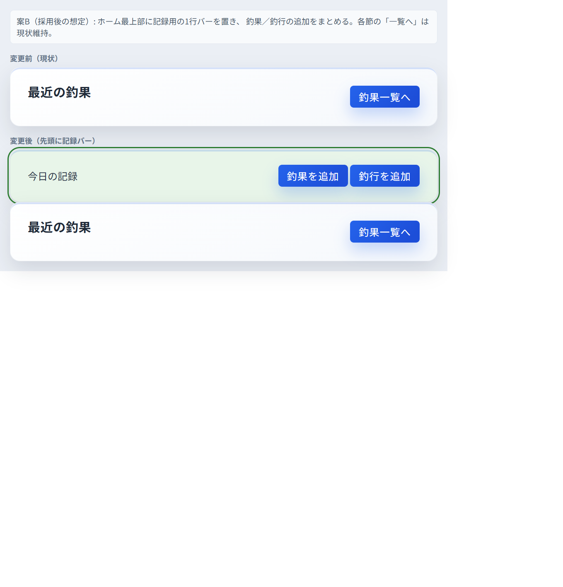
sample-ft-o8-b.png — ▲ 下の変更後は先頭の記録バー
実装: 未着手（診断のみ）。
MED
OPEN
FishTrack
FT-O6 — グローバルヘッダーがフラット同列でスキャンしづらい
画面: 全画面共通ヘッダー（PC 横並び／SP ドロワー）
対象箇所
- URL／画面: ログイン後の全ページ共通
partials/site_header.html（
.ft-site-header／#ftSiteNav.ft-site-nav）
- 位置: ブランド下のグローバルナビ一式
（ホーム〜水位・アカウント領域。管理者メニュー含む）
- 部品: フラットな
<a> 群＋
details.ft-nav-tackle。現在地用の
aria-current／active クラスは無し
- 対象外: 「タックルを探す」内のプラグ／ワーム同居は
FT-O2（本 ID はヘッダー全体の IA／スキャン性）
事象
到達自体は可能だが、今の形は「使いやすい」とは言い切れない。
記録（釣果・釣行・マイ*）／探す（タックル）／参照（水位）が
同じ重みのフラット同列で並び、視線の区画がない。
現在ページの視覚的手がかりがなく、PC では折返しでアカウント行が離れ、
SP ドロワーも長い同列リストになる。
/public-fields（パブリックフィールド）はヘッダーに無く、
他画面からの到達頼み。
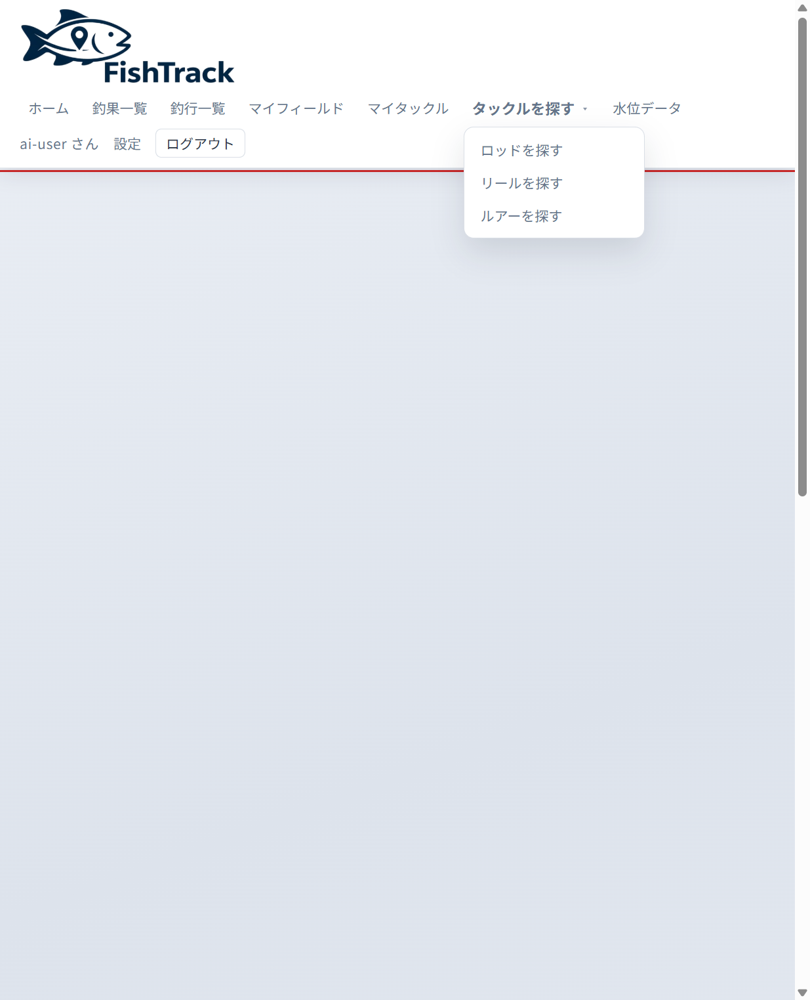
pc-header-nav-current.png — ▲ PC: フラット同列＋ドロップダウン。現在地なし
 sp-header-drawer-current.png — ▲ SP: 長いフラット一覧。ホームに current 表示なし
sp-header-drawer-current.png — ▲ SP: 長いフラット一覧。ホームに current 表示なし
何が問題か
- スキャン性: カテゴリ混在の同列リストは、目的リンクを探すコストが高い（特に SP）
- 現在地: 「今どこにいるか」がヘッダーから読めず、迷子・重複遷移が増えやすい
- 発見性: パブリックフィールドなど参照系の入口がヘッダーに無く、水位と並ぶ期待とずれる
- 密度: 設定／ログアウトがコンテンツナビと同列で競合し、折返し時に階層が崩れて見える
改善策
推奨: 案A。案A／案Bの違い:
記録／探す／参照のグループ化まで踏み込むか（A）vs
フラットを維持して現在地＋アカウント集約に留めるか（B）。
FT-O2（プラグ／ワーム分離）はどちらの案とも併用可。
案A — 記録／探す／参照グループ＋現在地 推奨
ナビを意味グループで区画し、現在地（
aria-current="page"）を付与。
参照に水位＋パブリックフィールド。アカウントは右側メニューへ。
メリット: スキャンと発見性が上がる。
デメリット: 見た目・DOM の変更量が大きい（学習コストあり）。
サンプル:
fishtrack/samples/ft-o6-a.html
（上＝変更前／下＝変更後）
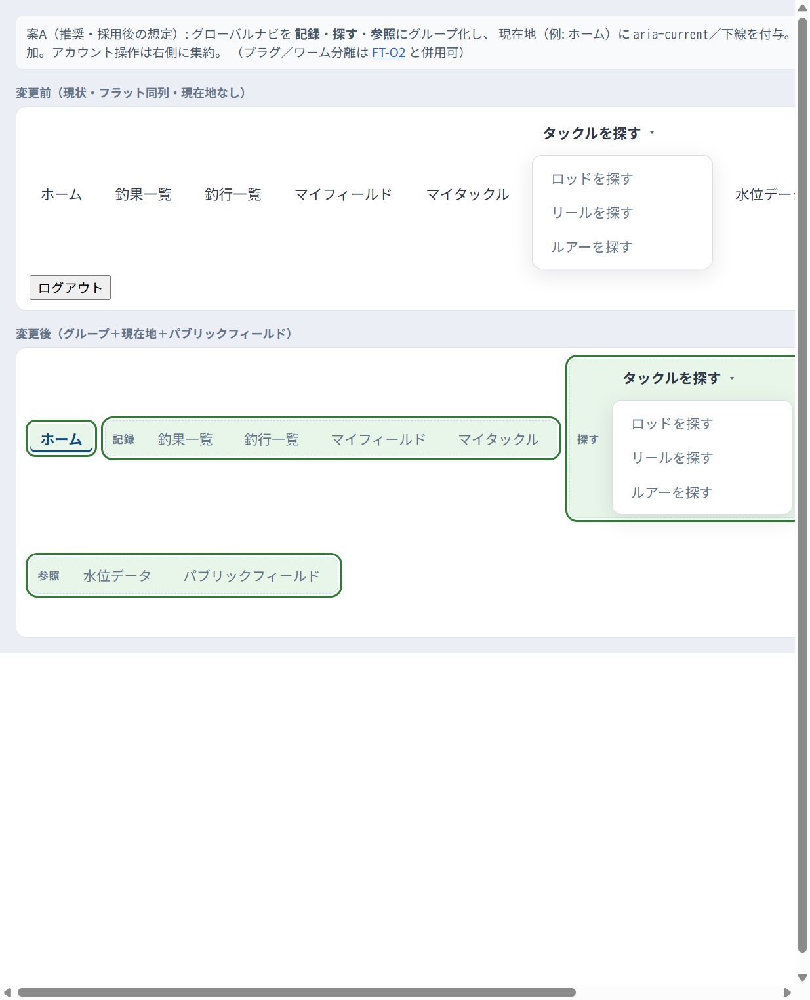
sample-ft-o6-a.png — ▲ 上＝フラット／下＝記録・探す・参照＋現在地
案B — フラット維持＋現在地とアカウント集約
構造は現状のまま、現在地表示とアカウントメニュー（設定／ログアウト）を追加。
パブリックフィールドを水位隣に追加。並びは利用頻度寄りに微調整。
メリット: 変更が小さく学習コストが低い。
デメリット: IA の混在は残る（スキャン改善は限定的）。
サンプル:
fishtrack/samples/ft-o6-b.html
（上＝変更前／下＝変更後）
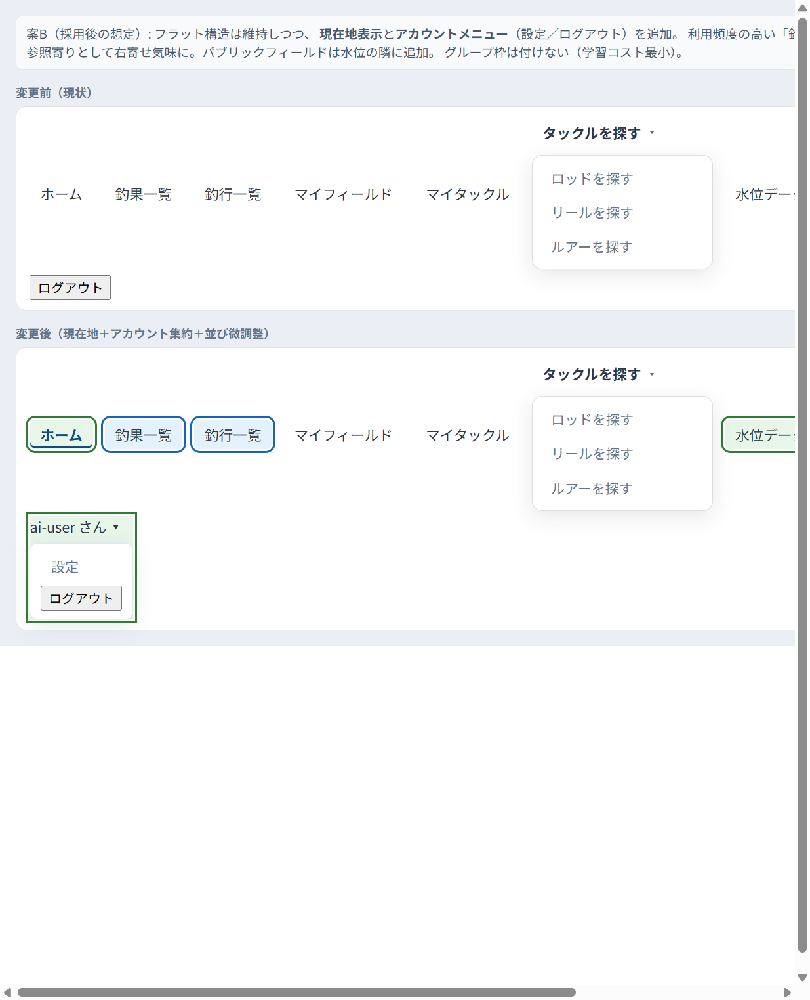
sample-ft-o6-b.png — ▲ 上＝現状／下＝現在地＋アカウント集約
実装: 未着手（診断のみ）。
site_header.html／
site_header_drawer.css／ナビ active 判定を同一リリースで揃える想定。
関連: FT-O2。
MED
OPEN
FishTrack
FT-O4 — 管理者向けに水位未対応のパブリックフィールドが見えない／対象外にできない
画面: 水位データ /water-level・パブリックフィールド一覧 /public-fields（管理者運用）
対象箇所
- URL／画面:
/water-level（対応済みカードのみ）、
/public-fields（水位列・フィルタ）
- 判定:
Field.water_level_source_type ＋観測所／レンタル店コード
（一覧バッジは
obs_ofc_cd/obs_obs_cd または
rental_boat_shop_id）
- 欠落: 「水位データが公開されていない」と管理者が判断した
対象外フラグ／見た目が無い
- 対象外（本診断の範囲外）: 一般ユーザーの水位カード閲覧 UX、FT-O3 の鮮度表示
表示対象（2026-08-13 確認）:
水位列・水位対応フィルタは管理者限定ではない。
/public-fields は @require_access_level("limited") で、
ログイン済み一般ユーザーにも同じ列が出る（is_admin 分岐なし）。
列の値は「対応」バッジか「-」。
案Bをそのまま入れると未対応／対象外バッジ＋進捗バーが
limited 全員に見える。運用専用にするなら案A、または案Bに管理者ゲートが必要。
採用待ち（本セッションでは実装しない）。
事象
理想は「パブリック Field は原則すべて水位対応」。しかし現状:
/water-level はソース設定済みだけを並べ、未対応パブリックは画面に出ない/public-fields は水位列が「対応」か「-」のみで、要対応の強調が弱い- 公開水位が無いフィールドを管理者がギャップから除外する状態・見た目が無い
ローカル実測（2026-08-13）: パブリック 9 件中 対応 5／未対応 4
（霞ヶ浦・テスト・あああ・chizu-field など）。
 pc-water-level-list-covered-only.png — ▲ 水位画面は対応済みカードのみ（未対応ギャップ非表示）
pc-water-level-list-covered-only.png — ▲ 水位画面は対応済みカードのみ（未対応ギャップ非表示）
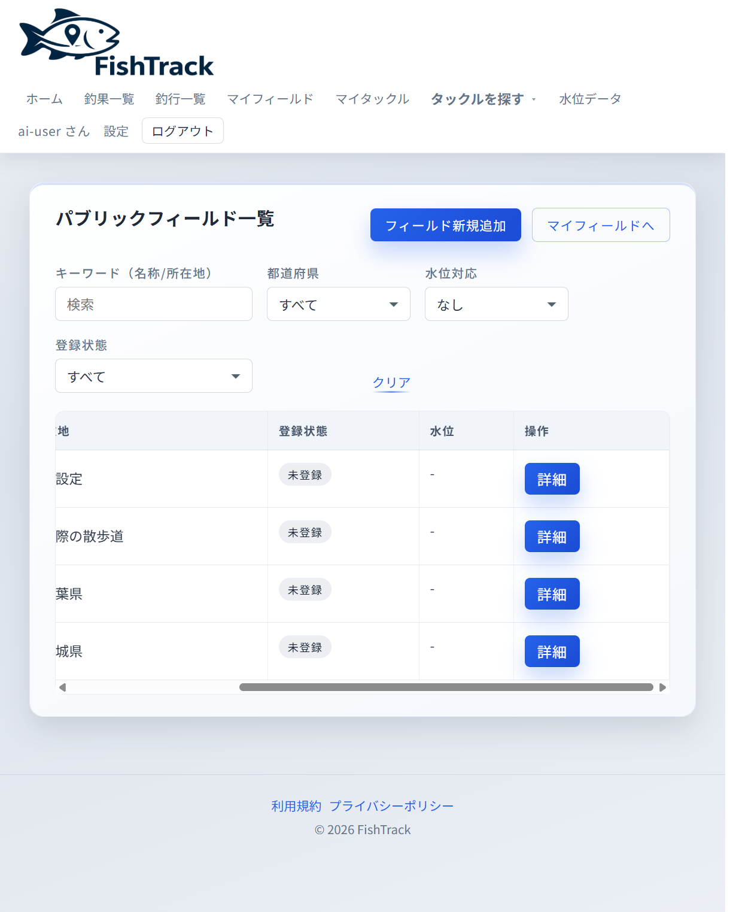
pc-public-fields-no-water.png — ▲ 水位対応=なし。水位列は「-」のみ（対象外区分なし）
何が問題か
- 運用ギャップ: 「全パブリックを水位対応に近づける」目標の進捗が見えない
- 誤った未対応扱い: 公開データが無いフィールドも「要対応」と区別できず、作業リストが濁る
- 場所の分散: 水位画面とパブリック一覧で情報が分断され、管理者の到達コストが高い
改善策
推奨: 案A。案A／案Bの違い:
水位画面に管理者専用カバレッジを置くか（A）vs
パブリック一覧の水位列を強化するか（B）。
いずれも「公開なしとして除外」→薄く取消線の対象外見た目が必須。
実装時は Field に除外フラグ（例:
water_level_unavailable）を追加する想定。
案A — 水位画面の管理者カバレッジ 推奨
/water-level 下部に要対応／対象外パネル。
メリット: 水位運用の文脈でギャップを一気に処理できる。
デメリット: 管理者専用 DOM が増える。
サンプル:
fishtrack/samples/ft-o4-a.html
（上＝変更前／下＝変更後）
 sample-ft-o4-a.png — ▲ 上＝対応のみ／下＝要対応＋対象外（取消線）
sample-ft-o4-a.png — ▲ 上＝対応のみ／下＝要対応＋対象外（取消線）
案B — パブリック一覧の水位状態強化
水位列を 対応／未対応／対象外バッジ＋進捗バー。
メリット: 既存一覧を拡張するだけ。
デメリット: 水位運用の導線が一覧側に寄る。
サンプル:
fishtrack/samples/ft-o4-b.html
（上＝変更前／下＝変更後）
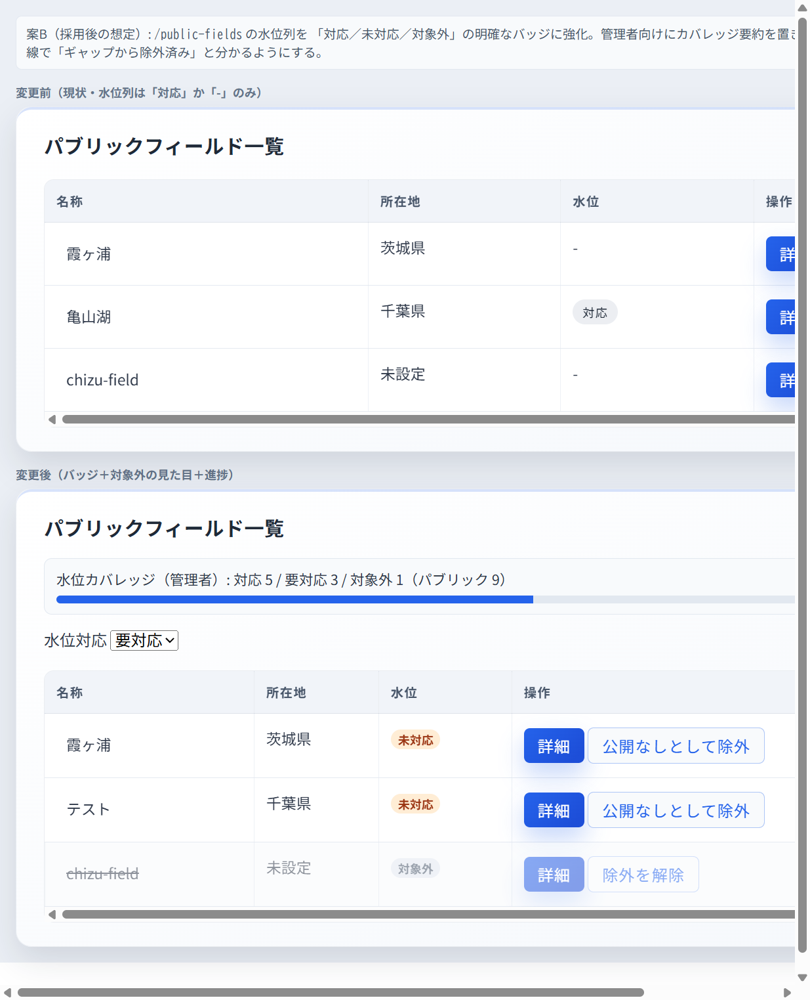
sample-ft-o4-b.png — ▲ 上＝「-」／下＝未対応バッジ＋対象外行
実装: 未着手（診断のみ）。採用待ち。
水位列は limited 全員に出るため、案Bを一般向けに出すかは要判断。
MED
OPEN
FishTrack
FT-O3 — 水位一覧で更新の古いフィールドが鮮度の新しいものと同見た目
画面: 水位データ一覧 /water-level
対象箇所
- URL／画面:
/water-level（水位データ一覧）
- 位置: マップ下のリザーバーカードグリッド
.water-level-cards／各
.water-level-card
- 部品: 水位値
.water-level-card__level・観測日
.water-level-card__date
（日付は表示されるが鮮度の視覚差なし）
- 並び: フィールド名順（
_get_water_level_fields の
order_by(Field.name)）。鮮度ソートなし
- 対象外: 水位詳細グラフ、フィールドマップのピン見た目
事象
観測日が古いフィールドも、直近更新のフィールドと同じカード見た目・同じ強調で並ぶ。
日付は小さなテキストとして出るだけで、「いま使える水位か」が一覧上で伝わらない。
ローカル実測（ai-user・2026-08-13）: 亀山湖の最新観測は
2026-07-29（約15日前）だが、通常カードと同型。
 pc-water-level-list-stale-same.png — ▲ 亀山湖 2026-07-29。鮮度バッジ・弱め表示・グループ分けなし
pc-water-level-list-stale-same.png — ▲ 亀山湖 2026-07-29。鮮度バッジ・弱め表示・グループ分けなし
何が問題か
- 信頼感: 古い水位が「現在の状態」と同列に見え、判断を誤らせうる
- 発見性: 日付を読み比べないと古さが分からない（フィールド増えるほど顕著）
- 並びの不自然さ: 名前順のため、古いカードが新しいカードと視覚的にも位置的にも混在する
改善策
推奨: 案A。案A／案Bの違い:
カード内の視覚で鮮度を示すか（A）vs
一覧を鮮度グループに分けるか（B）。
閾値は例として7日（バッチ日次想定。確定は実装時）。
案A — 古いカードを弱める 推奨
water-level-card--stale で薄く・破線枠・
「更新が古い」バッジ・相対日数。並びは維持でも可。
メリット: グリッド密度を保ちつつ一目で分かる。
デメリット: 閾値設計が必要。
サンプル:
fishtrack/samples/ft-o3-a.html
（上＝変更前／下＝変更後）
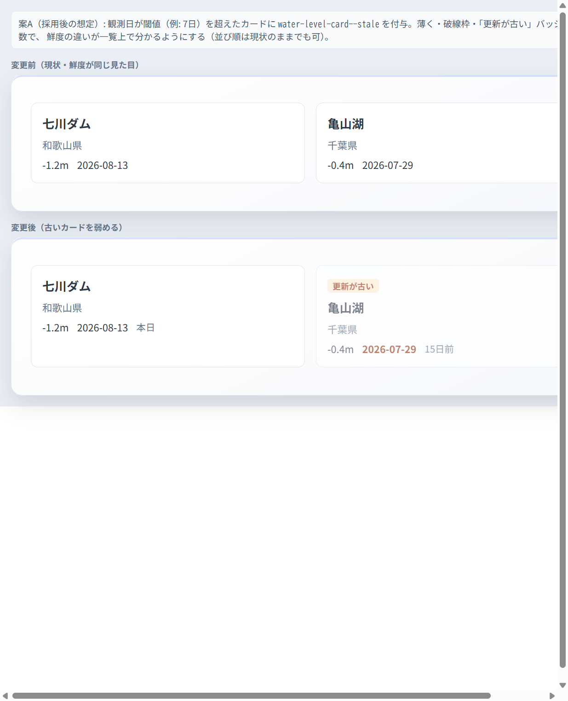
sample-ft-o3-a.png — ▲ 上＝同見た目／下＝古いカード弱め＋バッジ
案B — 鮮度でグループ分け
「最近の更新」「しばらく更新なし」に分割し、古いグループを見出しで明示。
メリット: 混在感が解消される。
デメリット: 縦スクロール・見出しが増える。
サンプル:
fishtrack/samples/ft-o3-b.html
（上＝変更前／下＝変更後）
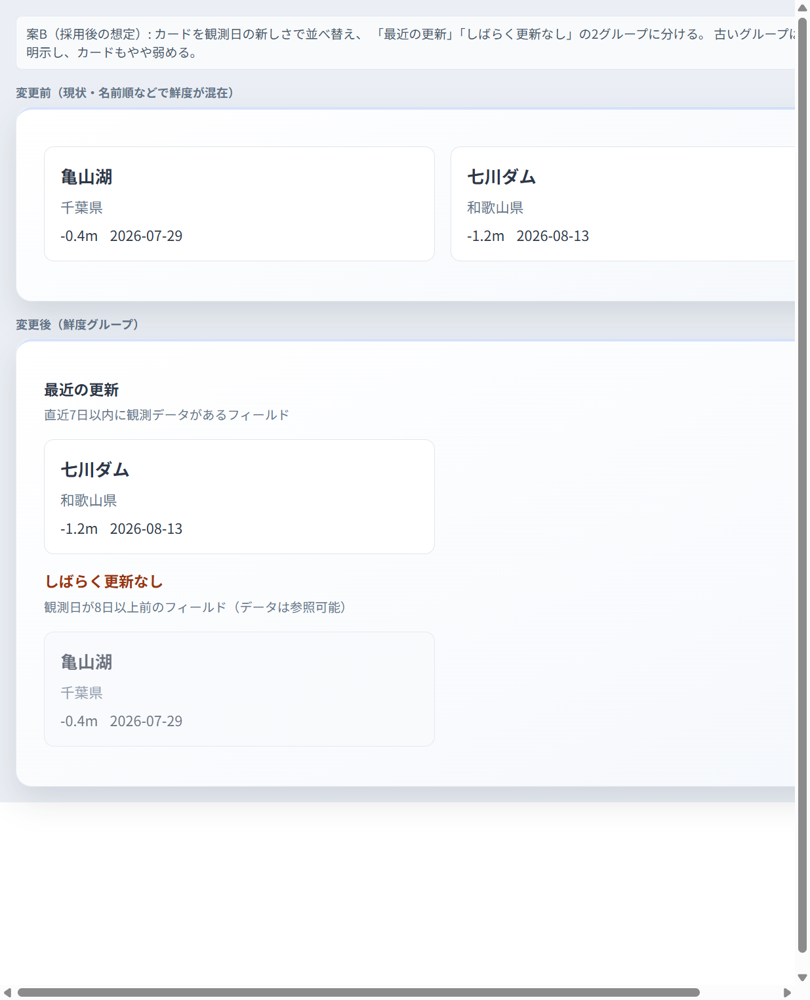
sample-ft-o3-b.png — ▲ 上＝混在／下＝最近／しばらく更新なし
実装: 未着手（診断のみ）。
テンプレ water_level/list.html と
water_level.css。鮮度判定は
latest_observed_date 基準。
MED
OPEN
FishTrack
FT-O2 — 「タックルを探す」でプラグとワームが「ルアー」1本に同居
画面: 全画面共通ヘッダー（PC ドロップダウン／SP ドロワー）
対象箇所
- URL／画面: 全ページ共通ヘッダー
partials/site_header.html
- 位置: 「タックルを探す」ドロップダウン内の
「ルアーを探す」1 リンク（ロッド／リールと同列）
- 遷移先:
/lure-masters
（着地後にページ内 switch-nav でプラグ／ワーム切替。既定はセッションまたはワーム）
- 対象外: マイタックル側のプラグ／ワーム一覧、ロッド／リールを探す自体
事象
ロッド・リールはヘッダーから種別ごとに直接入れるのに対し、
プラグとワームは「ルアーを探す」1 本にまとめられ、
着地後のタブ切替まで種別が選べない。
「ワームだけ見たい／プラグだけ見たい」意図がヘッダー段階で表現できない。
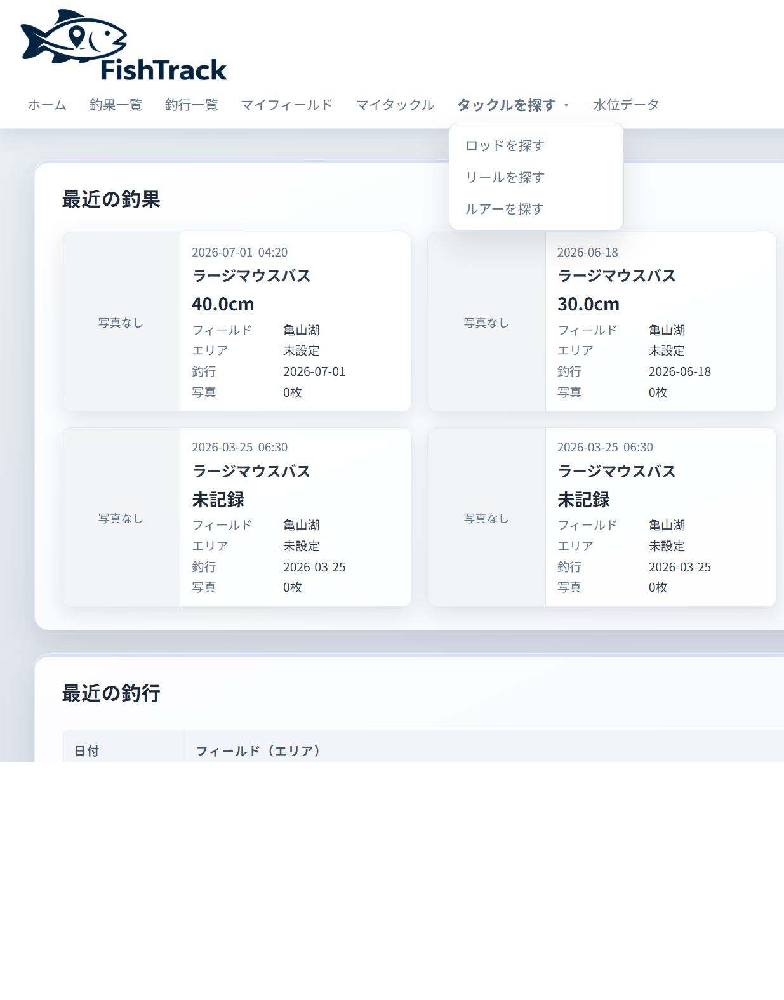
pc-header-tackle-search-dropdown.png — ▲ 「ルアーを探す」がロッド／リールと同列の単一入口
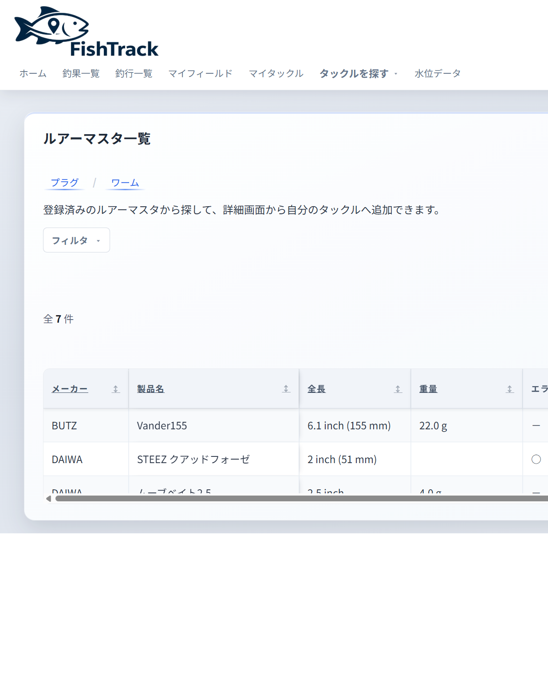
pc-lure-masters-plug-worm-tabs.png — ▲ 種別分岐は着地後のタブまで後回し
何が問題か
- 発見性: プラグとワームは運用上別カテゴリなのに、入口ラベルが「ルアー」一括で意図が伝わりにくい
- 到達コスト: 目的の種別へ行くのに「ルアー」→タブ切替の 2 段階が必要（ロッド／リールは 1 段階）
- 一貫性: タックル探索の粒度がロッド／リールとルアーで揃っていない
改善策
推奨: 案A。案A／案Bの違い:
ドロップダウンをロッド／リールと同列の 4 項目にするか（A）vs
「ルアー」語彙を残して入れ子にするか（B）。
案A — プラグ／ワームを同列分離 推奨
「ルアーを探す」を廃止し、「プラグを探す」「ワームを探す」をロッド／リールと同列に置く。
直リンクは /lure-masters?tab=plug|worm。
メリット: 1 クリックで種別確定・他タックルと粒度一致。
デメリット: ドロップダウン項目が 1 増える。
サンプル:
fishtrack/samples/ft-o2-a.html
（上＝変更前／下＝変更後）
 sample-ft-o2-a.png — ▲ 上＝ルアー1本／下＝プラグ・ワーム分離
sample-ft-o2-a.png — ▲ 上＝ルアー1本／下＝プラグ・ワーム分離
案B — ルアー配下に入れ子
「ルアー」ラベルは残し、直下にプラグ／ワームのサブリンクをインデント表示。
メリット: 「ルアー」語彙を維持。
デメリット: 階層が増え、SP ドロワーではさらに縦に伸びる。
サンプル:
fishtrack/samples/ft-o2-b.html
（上＝変更前／下＝変更後）
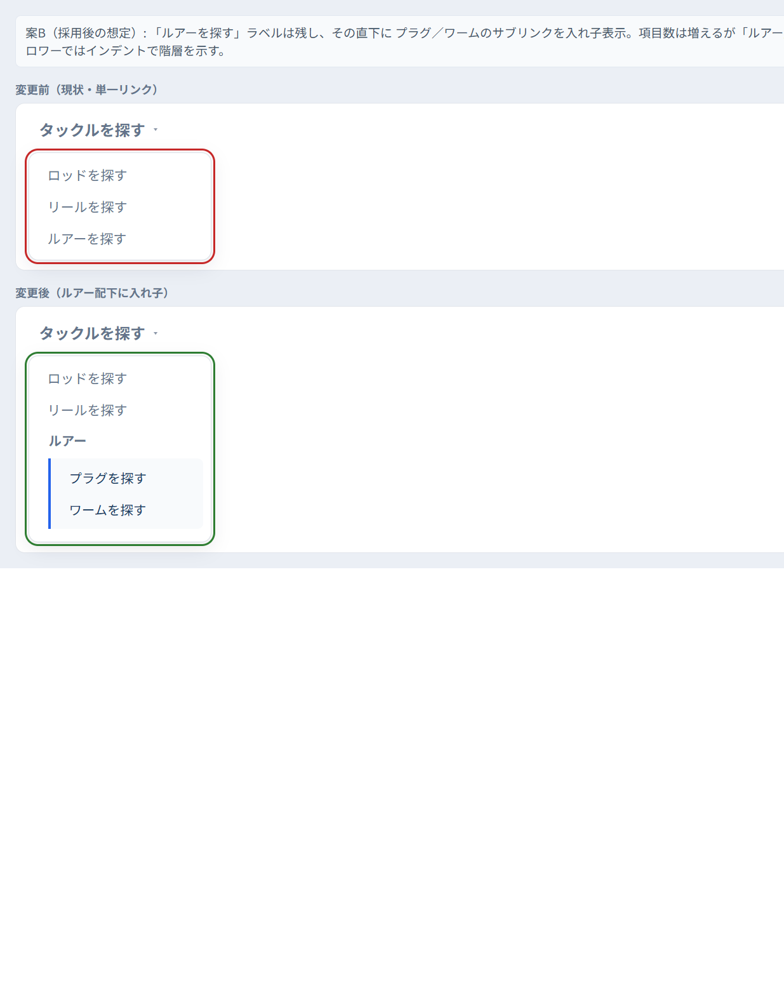
sample-ft-o2-b.png — ▲ 上＝単一リンク／下＝ルアー配下に入れ子
実装: 未着手（診断のみ）。
site_header.html のドロップダウン／SP ドロワーと、
/lure-masters の tab クエリ初期化を同一リリースで揃える想定。
MED
OPEN
FishTrack
FT-H7 — ホーム BEST5 に順位表示がなく 1 位が分かりづらい
画面: PC FishTrack ホーム /dashboard（年次 BEST5／ALL TIME BEST5）
対象箇所
- URL／画面:
/dashboard（ホーム）
- 位置: 「最近の釣行」の下 —
{{ year }} BEST5 と
ALL TIME BEST5 の各セクション
- 部品:
.home-dashboard__section 内の
.catch-card-grid ／
partials/_home_catch_card_grid.html
- 対象外: 「最近の釣果」カード（同パーシャルだがランキングではない）、
釣果一覧ページ
事象
BEST5 見出しはあるが、カードは「最近の釣果」と同型で順位バッジ・番号・1位強調がない。
ソート順（サイズ降順）だけに依存するため、グリッド並びではどれが 1 位か一目で分からない。
ローカル AI 環境ではサイズ付き釣果が少なく 1 件表示でも、構造上の問題は同じ。
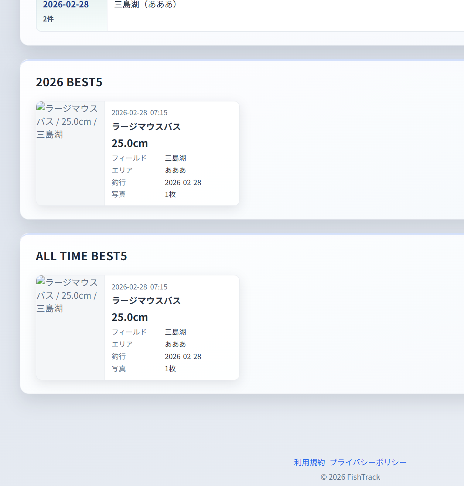
pc-dashboard-best5-before.png — ▲ 2026／ALL TIME BEST5。順位表記なし・通常釣果カードと同型
何が問題か
- 発見性: 「BEST5」なのにランキング感がなく、1 位の達成感・比較が弱い
- 認知コスト: サイズ数値をカードごとに見比べないと順位が確定しない
- 一貫性: セクション目的（ランキング）と UI（平列カード）が不一致で味気ない
改善策
推奨: 案A。案A／案Bの違い: グリッド密度を維持してバッジで順位を示すか（A）vs
縦リスト＋大順位で視線誘導を最大化するか（B）。
案A — 順位バッジ＋1位強調 推奨
既存 catch-card グリッド維持。各カードに #1〜#5。
1 位のみ枠・サイズ色を軽く強調。メリット: 縦占有を増やさない。
デメリット: 多列時は数字がやや小さい。
サンプル:
fishtrack/samples/ft-h7-a.html
（上＝変更前／下＝変更後）
 sample-ft-h7-a.png — ▲ 上＝順位なし／下＝#1〜#5 バッジ＋1位強調
sample-ft-h7-a.png — ▲ 上＝順位なし／下＝#1〜#5 バッジ＋1位強調
案B — 縦リスト＋大順位
BEST5 だけ縦1列。左に大きな順位数字。メリット: 1位の発見性が最大。
デメリット: ホームのスクロール量が増える。
サンプル:
fishtrack/samples/ft-h7-b.html
（上＝変更前／下＝変更後）
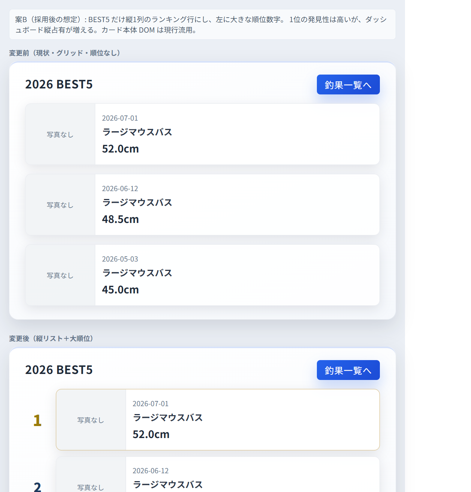
sample-ft-h7-b.png — ▲ 上＝グリッド現状／下＝左大数字の縦ランキング
実装: 未着手（診断のみ）。採用案が決まれば
home.html／パーシャルに順位 DOM、CSS は
fishtrack_tail.css 想定。
HIGH
OPEN
FishTrack
FT-O1 — ルアー釣果サマリにトレーラー使用分が含まれない
画面: マイタックル ワーム／プラグ一覧・製品詳細（釣果サマリ）
対象箇所
- URL／画面:
/tackle/?kind=worm|plug、
/tackle/worm/product/<id>・
/tackle/plug/product/<id>
- 位置: 一覧の釣果数／最大・平均サイズ列、詳細の「釣果サマリ」カード
- 集計:
batch_catch_summaries_for_lure_inventories／
lure_product_catch_detail／
_load_catches_for_lure_inventories
（いずれも Catch.lure_inventory_id のみ）
- 関連: 釣果一覧の
?lureInventoryId= 絞り込みも同様に
trailer_inventory_id を見ない（一覧リンクからもトレーラー釣果が欠ける）
- 対象外: ロッド／リール保有サマリ、フィールド／エリアサマリ
事象
釣果にワームをトレーラー（trailer_inventory_id）として記録しても、
当該ワームの釣果サマリは lure_inventory_id（主ルアー）一致のみ集計するため
件数 0・サイズ — のままになる。
ローカル実測（ai-user）: Catch #41 は主ルアー=Dゾーンフライ、トレーラー=STEEZ クアッドフォーゼ
（シナモンブルーフレーク）・40.0cm。ワーム製品詳細の釣果サマリは 0。
 pc-worm-product-trailer-summary-zero.png — ▲ シナモンブルーフレーク保有ありだが釣果サマリ 0
pc-worm-product-trailer-summary-zero.png — ▲ シナモンブルーフレーク保有ありだが釣果サマリ 0
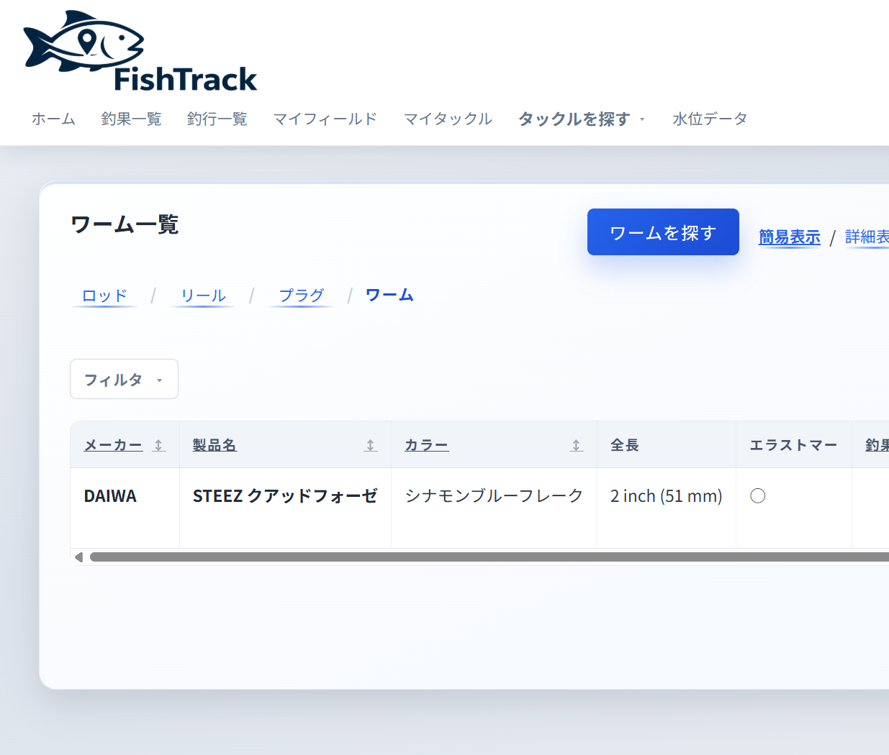
pc-worm-list-summary-cols.png — ▲ 一覧行も釣果数 0（アクセシビリティ上も 0 / — / —）
何が問題か
- 実績の欠落: スピナーベイト等＋トレーラー運用の実績がワーム側から消える
- 誤解: UI 上「使っていない」に見え、並べ替え（釣果が多い順）でも不利
- 一貫性: 釣果詳細ではトレーラー行を表示するのに、サマリ集計だけ無視する
改善策
推奨: 案A — 集計キーを
lure_inventory_id OR trailer_inventory_id に変更（同一 Catch の二重計上なし）。
一覧・製品詳細・カラー別・内訳を同じ定義に揃える。
案B — 案A の合計に加え、製品詳細だけ「主ルアー／トレーラー」内訳を表示。
案A — トレーラーを合算 推奨
メリット: 実装が集計条件の拡張で済む・一覧密度を維持。
デメリット: 役割の内訳は見えない。
サンプル:
fishtrack/samples/ft-o1-a.html
（上＝変更前／下＝変更後）
 sample-ft-o1-a.png — ▲ 上＝0件／下＝トレーラー合算で 1・40.0cm
sample-ft-o1-a.png — ▲ 上＝0件／下＝トレーラー合算で 1・40.0cm
案B — 合計＋役割内訳
メリット: 主／トレーラーの貢献が分かる。
デメリット: 詳細 UI が増える（一覧は案Aと同値でよい）。
サンプル:
fishtrack/samples/ft-o1-b.html
（上＝変更前／下＝変更後）
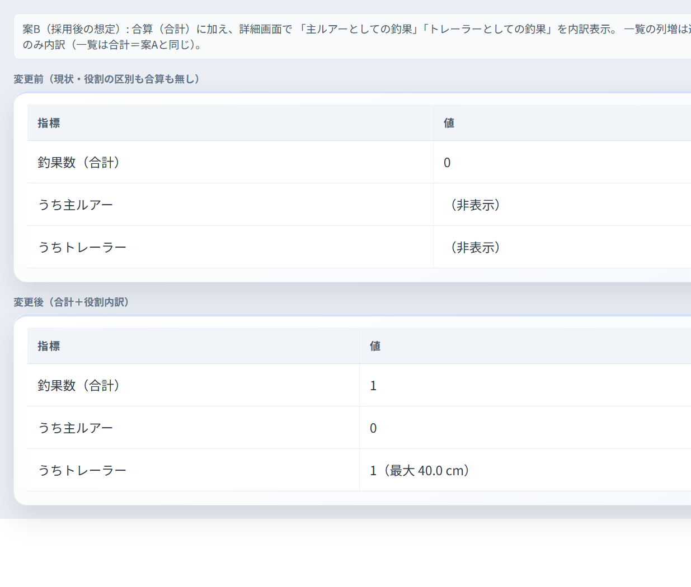
sample-ft-o1-b.png — ▲ 上＝内訳なし0／下＝合計1＋トレーラー1
実装: 未着手（診断のみ）。正本は
tackle_catch_summary.py。釣果一覧フィルタの OR 拡張も同一リリース推奨。